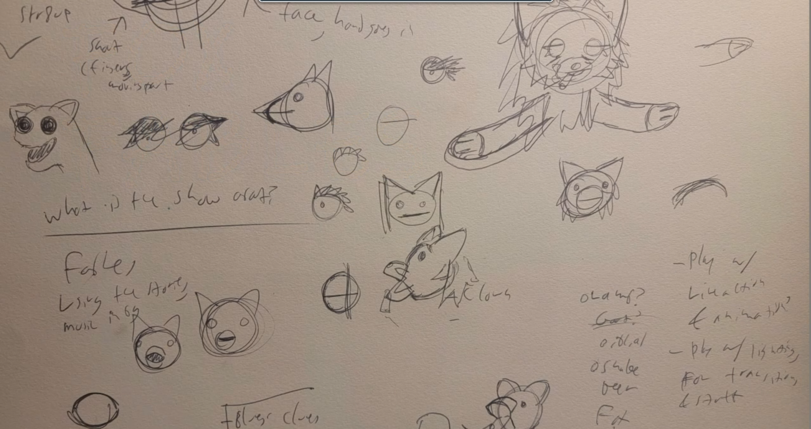
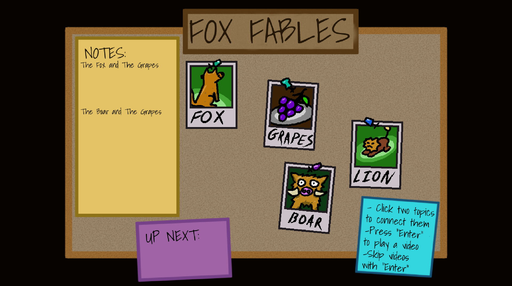

Fox Fables
Solo Project
RESPONSIBILITIES
Script Writing
Puppet Making
Voice Acting Direction
Design
Implementation
Iterative Process
Fox Fables started with a simple image: a puppet smoking a cigarette. From this moment, I created everything else surrounding the game.
I started the process by coming up with a series of premises. The first idea was to theme it as a children's show, and have the player take the role of a child fan of the show turned investigative reporter, who would interview the puppet and slowly learn the dark truth of what was going on.
I liked the idea of using fables as the baseline inspiration for the segments in the game. As foxes are a frequent character featured in fables, I started working on the design of fox hand puppet to star in the show.
After presenting this idea to some friends, they asked me, "Why are you planning on targeting this game towards kids?" This question broke down the intentions behind this game, and made me realize I had a great opportunity: I could tell a story about adults, for adults, with the aesthetics of a kid's puppet show. I first outlined the characters, and the overarching story between them, to reflect this.
The premise became investigating the star of a now-cancelled, long running TV show about fables. I put in themes of fame, the balance of creative minds and the producers that hold them back, and stories inspired by Aesop's fables, to reflect the medium of puppets, the hands that control them, and the real-life implications of those same fables.

The bulk of this project was the filmmaking process. I always love to learn and experiment with new mediums and tools, so I started by doing extensive research about how to make and use puppets. After drawing out a couple of different ideas on paper, I decided to use a pattern to cut and sew the base design of the puppet, so I could refine it further. I prototyped the ears and tail first, before making the body. I took videos of this process for both posterity and the thought that I may be able to later use it for the final project itself.

I then enlisted the help of a voice actor friend, directing them with the existing script. We had careful conversations about the character of Fox, as well as the intent behind each line, but I also made sure they felt a part of the creative process, and they often put their own spin on the takes. The end result was more than the sum of its parts.
Using the recorded voice lines, I filmed the bulk of the video. I first tested by just recording alone in my room, discovering how I could articulate the puppet and what actions would look best on camera. On a later date, I enlisted the help of some more friends to complete the actual shoot of the video portions.

Finally, it was time to put it all together into a game. I wanted to make sure that everyone who went through Fox Fables had a unique experience with the story. To do this, I created a system where players can click on two nodes on their pinboard to view a video associated with it. These were flavored after characters in fables, so I was able to push the main theme by using the names of well-known fables for especially important segments, such as "The Fox and The Grapes" and "The Scorpion and The Frog." I added a mechanic where players can unlock new nodes by playing certain important videos, creating a sense of progression.
I wrote a short, looping song to add to the game's mysterious atmosphere. After testing, I found it worked well to just lower the audio while in the video segments rather than start and stop it. This helped push a more cohesive experience.
When the game finally came together, I sent it off for playtesting. Most of the notes I got were on accessibility and quality of life, such as adding subtitles and a list of videos that players had already seen. I designed this list in a way that encourages players to go back and use past nodes with any new ones they unlocked.
The current result of Fox Fables, while a stable prototype, is still unfinished. I want to add more to the world, as well as more interactions, and perhaps more videos. I have already started out what the planning of this could look like first: newspapers that you scroll through and click on to add new nodes. With more time and iteration, Fox Fables will become a unique detective game experience, that tells a story that is both funny and fascinating.